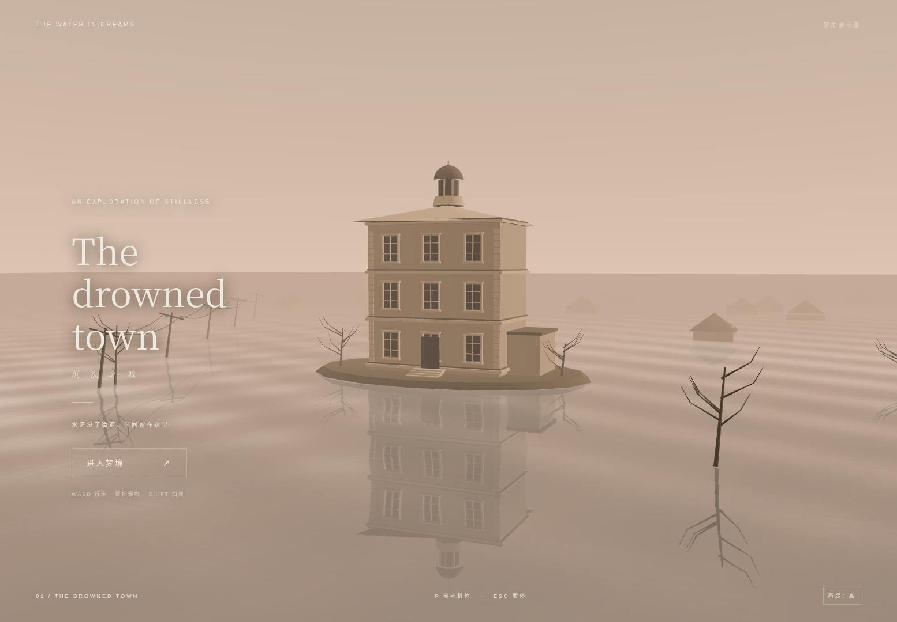
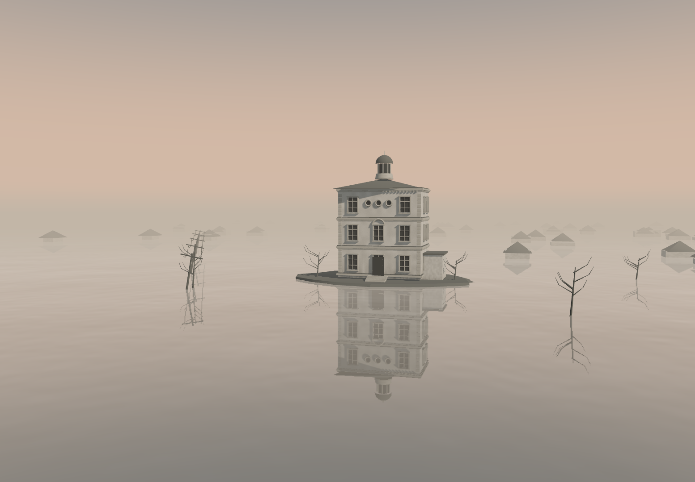

Actual browser captures at 1554 × 1080. Left: previous delivered reference view. Right: revised reference framing, overlays hidden. Framing differs intentionally; this is not a controlled same-camera lighting comparison. Original user reference is visible in the conversation but unavailable here as a local image, so it is not fabricated or replaced.

